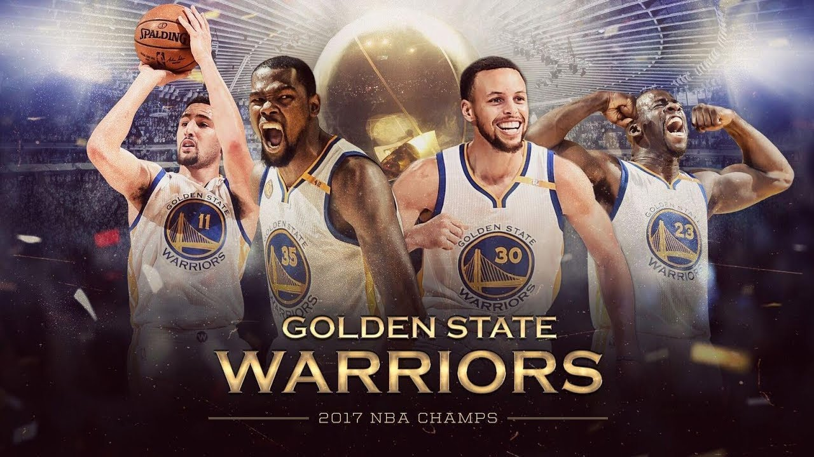

The Winner NBA SESON 2016-2017 |
|
 The 2017 NBA Finals was the championship series of the National Basketball Association (NBA)'s 2016–17 season and conclusion of the season's playoffs. The Western Conference champion Golden State Warriors defeated the defending NBA champion and Eastern Conference champion Cleveland Cavaliers 4 games to 1. This Finals was the first time in NBA history the same two teams had met for a third consecutive year. The Cavaliers sought to repeat as champions after winning the championship in 2016, while the Warriors won the first meeting in 2015. Golden State earned home court advantage with a 2016–17 regular season record of 67–15, while Cleveland finished the regular season with a 51–31 record. The Warriors entered the 2017 Finals after becoming the first team in NBA playoff history to start 12–0, while the Cavaliers entered the 2017 Finals with a 12–1 record during the first three rounds of the postseason. The Warriors' 15–0 start in the playoffs is the most consecutive postseason wins in NBA history and their 16–1 record is the best winning percentage (.941) in NBA Playoff history.[2][3] |